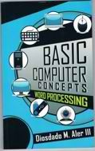
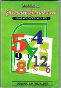
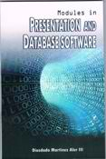
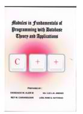
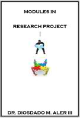
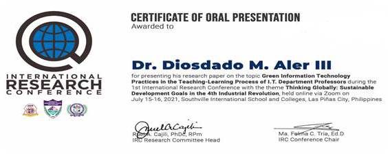
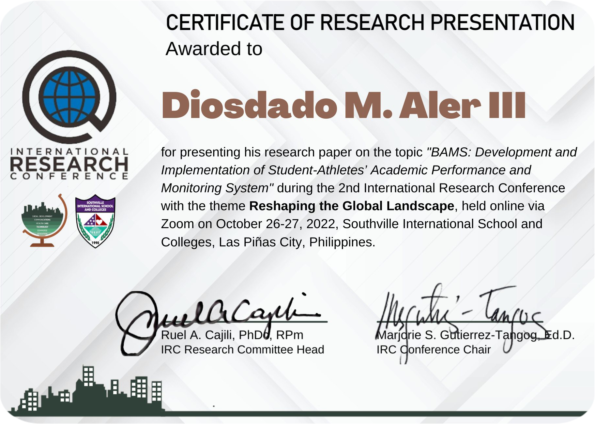

Books Authored
Basic Computer Concepts (2012)
Word Processing(Using MS-Word 2007)(2012)
Modules in Electronic Spreadsheet (Using MS-Excel 2007 (Sep 6, 2012)
Modules in Presentation and Database Software
(Using MS-PowerPoint 2007 and MS-Access 2007) (Sep 6, 2012)

Modules in Fundamentals of Programming with Database Theory and Applications(Using C++) (Nov 29, 2012)
Modules in Research Project (Aug 17, 2012)
Researches

"Green Information Technology Practices in the Teaching-Learning Process of I.T. Department Professors" (March 17, 2020 - postponed due to ECQ)
"BAMS: Development and Implementation of Student Athletes Academic Performance and Monitoring System"